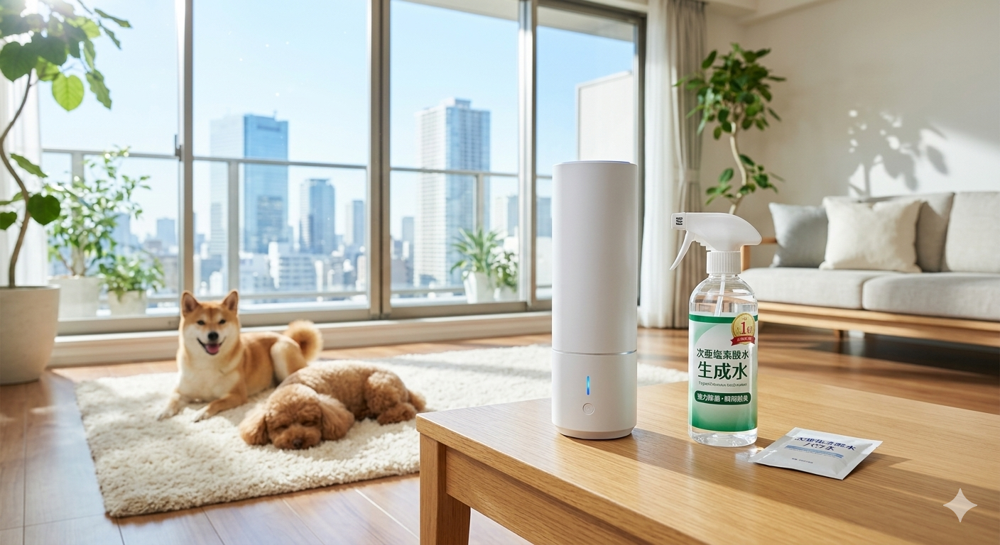

愛犬との暮らしは最高ですが、多頭飼いになると避けられないのが「家の中のニオイ」と「掃除」の悩み。本記事では、「菌から分解する脱臭力」「愛犬が舐めても安心な成分」「ランニングコスト」の3軸で、本当に効果があった掃除グッズを比較しました。
| 製品タイプ | 脱臭・除菌力 | 安全性(舐めてOK) | コスパ(月間) | こんな人に最適 |
|---|---|---|---|---|
| 1位：次亜塩素酸水(生成) | ★★★★★ | ★★★★★ | ★★★★★ | 多頭飼いで大量にスプレーを消費する人 |
| 2位：ジアイーノ(空間除菌) | ★★★★★ | ★★★★☆ | ★★☆☆☆ | リビング全体のニオイを根本解決したい人 |
| 3位：カンファペット | ★★★★☆ | ★★★★★ | ★★★☆☆ | 手軽に持ち運んでピンポイント消臭したい人 |
ニオイの元となる菌を分解した後は水に戻るため、フローリングやトイレの清掃に最も安全です。
多頭飼い特有の「家に入った瞬間のニオイ」を消し去る力は、現存する家電の中で最高峰です。